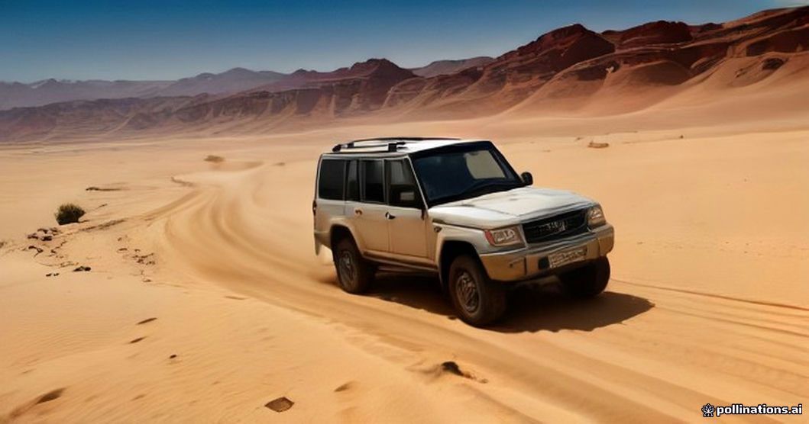

Long drives over the High Atlas Mountains via the Tizi n'Tichka pass require realistic spatial planning. A Toyota Land Cruiser Prado is legally registered to carry up to six passengers, but fitting four adults with full-sized suitcases leaves no rear visibility and severely restricts legroom over an 8-hour driving day. Comfortable transport comes down to physical cabin volume, not just the number of seatbelts installed.
Tour operators frequently list vehicle capacity based on chassis registration rather than long-distance comfort with luggage. Understanding the trade-offs between standard 4x4s, executive minivans (such as the Mercedes Vito or V-Class), and larger mini-buses (Mercedes Sprinter or Ford Transit) ensures your group stays comfortable without stacking bags on lap space or relying heavily on roof racks.
Toyota Land Cruiser Prado: Ideal for 1 to 3 Passengers
The Toyota Prado 4x4 is the standard transport vehicle across Moroccan desert routes. When carrying 2 to 3 passengers, the third-row seats fold completely flat, creating a cargo space capable of holding three large hardshell suitcases alongside individual daypacks. Rear passengers enjoy dedicated air-conditioning controls and generous legroom.
When group sizes reach 4 or 5 adults in a Prado, space becomes compromised. The middle seat in the second row is narrow, and fitting 4 large suitcases behind folded third-row seats forces bags to be stacked to the ceiling. If you are comparing transport options, review our breakdown on van vs 4x4 sahara desert tour options to evaluate chassis types.
Executive Minivans: The Choice for 4 to 5 Adults
For families or adult groups of 4 to 5 people, an executive minivan such as a Mercedes Vito, Mercedes V-Class, or Hyundai H1 is almost always superior to a standard 4x4. These vehicles feature individual passenger seating, wider aisles, and a deep, vertical rear boot that easily accommodates 5 to 6 large suitcases without obstructing rear vision.
The trade-off is off-road terrain handling. Minivans run on standard road suspension and cannot drive directly over deep sand dunes. However, because the entire drive from Marrakesh or Fes to Merzouga takes place on paved asphalt, off-road capability is unnecessary for the transit. Dune transfers at the desert edge are handled by local camp 4x4s. For families traveling with mixed ages, read our notes on marrakesh to merzouga with kids and elderly travelers.
Minibuses for Groups of 6 or More
Groups of 6 to 12 passengers require a high-roof minibus like a Mercedes Sprinter or Ford Transit. These vehicles feature standing head height, reclining seats, double rear tires for stability, and separate rear baggage compartments that eliminate space constraints.
There are operational considerations when choosing a minibus. Larger vehicles move slower around tight mountain switchbacks, adding roughly 30 to 45 minutes to the mountain crossing. They also cannot navigate narrow street entrances in old medinas. For logistical details on city pickups, see our guide on marrakesh riad pickup logistics.
Roof Racks, Dust, and Weather Exposure
When group passenger counts exceed interior luggage space, operators secure bags onto external roof racks using heavy tarps and straps. While safe, roof mounting exposes baggage to environmental factors along the 500-kilometer drive.
Fine desert dust penetrates zipper teeth on soft duffel bags, and sudden rainstorms over the Atlas passes can saturate canvas. If your group requires roof storage, pack sensitive gear inside sealed plastic liners.
- Pack fragile electronics, camera equipment, and daily medication in cabin daypacks.
- Use hardshell luggage if roof mounting is required to protect contents from tie-down compression.
- Request a vehicle upgrade to a minivan if your group carries more than one large suitcase per person.
| Vehicle Class | Seatbelts | Ideal Passenger Count | Luggage Capacity | Key Trade-Off |
|---|---|---|---|---|
| Toyota Prado 4x4 | 7 | 1–3 adults | 3 large bags + daypacks | Tight boot space if 4+ passengers carry full-sized bags |
| Mercedes Vito / V-Class | 7–8 | 4–5 adults | 5–6 large bags | Standard road clearance; cannot cross deep sand |
| Mercedes Sprinter / Transit | 14–17 | 6–12 adults | 12+ large bags | Slower on mountain curves; no medina street access |
| Land Cruiser 200 Series | 7 | 3–4 adults | 4 large bags | Higher cost category; limited availability |

Illustration, not a photograph — for the real thing, you'll have to stand on the ridge yourself.
Quick answers
A few follow-up questions travelers ask about this.
Do we need a 4x4 vehicle for the entire drive from Marrakesh to Merzouga?
No. The entire road network connecting Marrakesh, Ouarzazate, Fes, and Merzouga is paved asphalt. A 4x4 is only needed if driving off-road into desert dunes, but desert camps provide 4x4 shuttles from asphalt meeting points.
What happens if our group brings more luggage than fits in the trunk?
Excess luggage is secured to an overhead roof rack under a heavy canvas tarp. While safe, roof storage exposes bags to fine sand dust and takes longer to unload at evening hotel stops.
Can a 14-seat minibus pick us up directly at our riad door?
No. Historic medinas in Marrakesh and Fes feature pedestrianized alleys that vehicles cannot enter. Minibuses drop off and pick up at designated gates or parking lots, where porter carts transport your luggage.
Planning your own route?
Tell us your dates and what matters to you — we'll answer with a straight recommendation, not a brochure.
Send an inquiry See the itineraries